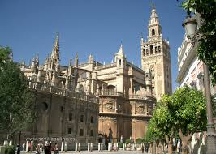

Los cristianos ocupan en 1248 una Sevilla vacía y despoblada de la que había
huido la población islámica. Los primeros repobladores, sin recursos económicos
ni mano de obra para emprender nuevas construcciones, comienzan a ocupar
simplemente todos aquellos edificios islámicos que han quedado sin uso. Las
mezquitas fueron convertidas en iglesias cristianas con la simple colocación
de una imagen de Cristo crucificado o una Virgen María. Sólo a fines del
siglo XIII y, sobre todo, después del terremoto de 1356, con apoyo financiero
del rey Pedro I, se inicia la construcción de las nuevas parroquias. De aquellas
primitivas iglesias quedan varias en el norte de la ciudad: San Gil, Santa
Marina, San Marcos, San Julián, Danta Lucía, Omniun Sanctoum, Santa Catalina
etc. La mezquita mayor no sería sustituida por la catedral hasta el siglo XV.
